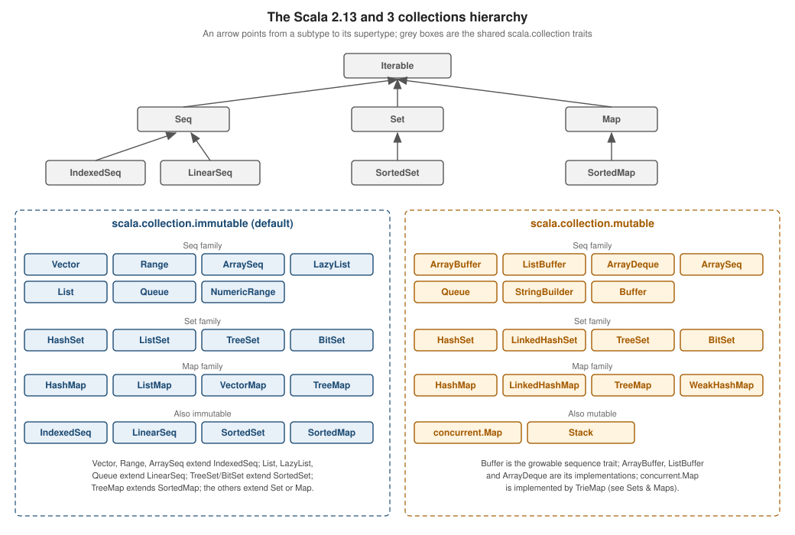

Collections Overview
|
This content was generated with the assistance of AI and should be verified against the official documentation before being relied on in production. |
This page is written against Scala 3.10 (3.10.0, released 2026-10-12) and every example was compiled and run with Scala
3.10.0 through Scala CLI on JDK 26 (checked on 2026-10-15). The collections API is the Scala 2.13 collections API. The
3.3 LTS line (3.3.8) uses the Scala 2.13 scala-library itself, and since Scala 3.8 the standard library is a Scala 3
scala-library artifact compiled by Scala 3 with the same collection types and methods, so the 3.9 LTS line (3.9.0,
2026-09-03) and the 3.3 LTS line behave the same way for everything on this page; see Scala 3.9 LTS versus 3.10.
Scala has one collections library that every program uses, with a deliberately small set of ideas: a few abstract traits
describe what a collection can do (Iterable, Seq, Set, Map), concrete classes decide how (List, Vector,
HashSet, TreeMap, …), and a single decision, immutable or mutable, is made by choosing a package. The examples use the
trailhead scenario, a toolkit that plans hikes on a network of mountain trails.
This page is the map. The next pages go deeper: Sequences,
Sets & Maps, Collection Operations,
Views, Iterators & LazyList and
Collection Performance & Equality. For the Java
side see the Java Collections Framework, and for the Kotlin
side see the Kotlin pages starting from null safety, where List<T?> and
friends are discussed.
The three big ideas
-
Immutable by default.
List,Vector,SetandMapwritten without any import are the immutable ones. "Updating" an immutable collection returns a new collection that shares most of its structure with the old one. -
One uniform vocabulary. Every collection supports the same operations (
map,filter,foldLeft,groupBy, …), and the result type follows the receiver: mapping aVectorgives aVector, mapping aSetgives aSet. -
Interfaces first. Declare parameters as
Seq,Set,MaporIterableand pick the implementation where the value is built, as in Java’sList/ArrayList.
The hierarchy

The trait hierarchy has three layers:
-
scala.collectionholds the shared abstract traits:Iterable,Seq,IndexedSeq,LinearSeq,Set,SortedSet,MapandSortedMap. A method that only reads can accept these and works with both families. -
scala.collection.immutableholds the traits and classes that can never change after construction:List,Vector,Range,LazyList,Queue,HashSet,TreeSet,BitSet,HashMap,TreeMap,ListMap,VectorMap,ArraySeq. -
scala.collection.mutableholds the in-place counterparts:ArrayBuffer,ListBuffer,ArrayDeque,Queue,StringBuilder,HashSet,LinkedHashSet,HashMap,LinkedHashMap,TreeMap,WeakHashMap.
Every one of the facts in the next program is checked by the compiler; summon[A <:< B] only compiles when A is a subtype of
B, and =:= only when the two types are the same type.
//> using scala 3.10.0
package trailhead
import scala.collection.{immutable as i, mutable as m}
@main def hierarchy(): Unit =
summon[i.List[Int] <:< i.LinearSeq[Int]]
summon[i.Vector[Int] <:< i.IndexedSeq[Int]]
summon[i.Range <:< i.IndexedSeq[Int]]
summon[i.LazyList[Int] <:< i.LinearSeq[Int]]
summon[m.ArrayBuffer[Int] <:< m.Buffer[Int]]
summon[m.ArrayBuffer[Int] <:< m.IndexedSeq[Int]]
summon[m.ListBuffer[Int] <:< m.Buffer[Int]]
summon[i.TreeSet[Int] <:< i.SortedSet[Int]]
summon[i.BitSet <:< i.SortedSet[Int]]
summon[i.TreeMap[Int, Int] <:< i.SortedMap[Int, Int]]
summon[m.Map[Int, Int] <:< scala.collection.Map[Int, Int]]
summon[i.Map[Int, Int] <:< scala.collection.Map[Int, Int]]
summon[Seq[Int] =:= i.Seq[Int]]
println("every subtype fact compiled")every subtype fact compiledThe last line of the program is the important one for newcomers: the plain Seq in scope is immutable.Seq.
Source: Scala 3 Book: Collections hierarchy and Collections 2.13: An overview of the collections API
What each abstract trait promises
| Trait | Contract |
|---|---|
|
Can produce an |
|
An ordered collection with positions ( |
|
No duplicate elements; the main operation is membership ( |
|
Keys mapped to values; each key appears once. A |
|
Keep the elements or keys ordered according to an |
|
A growable |
Under scala.collection.mutable the traits carry the same names (mutable.Seq, mutable.Set, mutable.Map) and add the
operations that change a collection in place. A mutable.Map is not a subtype of immutable.Map, and vice versa; both
extend scala.collection.Map.
Default imports and the two meanings of Seq
A few names are available in every Scala file because scala and Predef are imported automatically: List, Vector, Seq,
IndexedSeq, Iterable, Set, Map, Range, Nil, LazyList, StringBuilder, :: and Option. The collection
aliases in scala and Predef (List, Seq, Set, Map, Vector, LazyList, …) point at the immutable versions;
Iterable and Iterator have no mutable flavour and point at scala.collection, and StringBuilder is the one mutable
name in scope. The factory apply methods choose a concrete class for you:
//> using scala 3.10.0
package trailhead
@main def defaults(): Unit =
val trails: List[String] = List("Ridge", "Falls", "Pass")
val dist: Map[String, Double] = Map("Ridge" -> 12.5, "Falls" -> 4.0)
println(trails)
println(dist)
println(Set(1, 2, 2, 3))
println(Seq(1, 2, 3).getClass.getName)
println(Iterable(1, 2).getClass.getName)
println(Set(1, 2).getClass.getName)
println(Map(1 -> 2).getClass.getName)
println(Vector(1, 2).getClass.getName)List(Ridge, Falls, Pass)
Map(Ridge -> 12.5, Falls -> 4.0)
Set(1, 2, 3)
scala.collection.immutable.$colon$colon
scala.collection.immutable.$colon$colon
scala.collection.immutable.Set$Set2
scala.collection.immutable.Map$Map1
scala.collection.immutable.Vector1Reading the output: Seq(...) and Iterable(...) build a List (the class :: is the non-empty List cell, here shown as
$colon$colon); Set and Map with up to four entries use small specialised classes (Set2, Map1, … Set4, Map4)
that store the elements in fields and keep insertion order; beyond four entries they switch to hash tries (HashSet,
HashMap) whose order is unspecified. Never rely on the iteration order of a plain Set or Map. When an order matters,
choose ListMap/VectorMap/LinkedHashSet (insertion order) or TreeSet/TreeMap (sorted order), described in
Sets & Maps.
To use the mutable versions, import them explicitly. The usual idiom keeps the package name visible so that no reader mistakes a mutable collection for an immutable one:
//> using scala 3.10.0
package trailhead
import scala.collection.mutable
def describe(xs: scala.collection.Iterable[Int]): String =
xs.getClass.getSimpleName + " sum=" + xs.sum
@main def mutability(): Unit =
val imm = Vector(3, 1, 2)
val mut = mutable.ArrayBuffer(3, 1, 2)
println(describe(imm))
println(describe(mut))
val more = imm :+ 4
println(imm)
println(more)
mut += 4
println(mut)
val shared = mutable.Map("a" -> 1)
val snapshot = shared.toMap
shared("b") = 2
println(snapshot)
println(shared)Vector1 sum=6
ArrayBuffer sum=6
Vector(3, 1, 2)
Vector(3, 1, 2, 4)
ArrayBuffer(3, 1, 2, 4)
Map(a -> 1)
HashMap(a -> 1, b -> 2)describe accepts scala.collection.Iterable, so it takes both an immutable Vector and a mutable ArrayBuffer. The
immutable imm :+ 4 leaves imm untouched and returns a new Vector; the mutable mut += 4 changes the buffer itself.
toMap makes an immutable snapshot, which is the safe way to hand out the contents of a mutable map.
Because the plain Seq is immutable.Seq, handing a mutable collection to a method that expects Seq is a compile-time error,
and the compiler tells you why:
//> using scala 3.10.0
import scala.collection.mutable
def takesSeq(xs: Seq[Int]): Int = xs.sum
@main def run(): Unit =
val buf = mutable.ArrayBuffer(1, 2)
println(takesSeq(buf))-- [E007] Type Mismatch Error: c.scala:6:19
6 | println(takesSeq(buf))
| ^^^
| Found: (buf : scala.collection.mutable.ArrayBuffer[Int])
| Required: Seq[Int]Two ways out: accept scala.collection.Seq in the method (read-only access to anything sequence-like), or convert at the call
site with buf.toSeq (a copy). The rule of thumb from the library’s authors is the same as for Java’s List versus
Collections.unmodifiableList: a Seq parameter is a promise that nobody will change the collection underneath the method.
Choosing a collection
Start from what the program does with the collection, then refine.
| You need | Reach for | Why |
|---|---|---|
An ordered sequence, mostly processed with |
|
Cheap prepend and |
An ordered sequence with fast indexing and updates, or you are not sure |
|
Effectively constant time for |
A growable sequence you fill in a loop |
|
Amortised constant time append; convert with |
A range of numbers or characters |
|
Stores only start, end and step; use it in |
Fixed-size, primitive-speed storage, interop with Java arrays |
|
Maps to a JVM array; see Array, ArraySeq and IArray. |
Unique elements, membership tests |
|
Fast |
Look up values by key |
|
Fast |
A FIFO or double-ended queue |
|
|
A possibly unbounded or expensive-to-compute sequence |
|
Elements are computed on demand; see Views, Iterators & LazyList. |
Shared state across threads |
|
Immutable collections are safe to share; mutable ones are not thread-safe. See Sets & Maps. |
Two guidelines cover most code. First, prefer the immutable collection and a val; if you need to change a value, create a
new one (val next = current :+ x) or keep an immutable collection in a var that is local and short-lived. Second, when you
do need mutation, build with a mutable collection or a Builder and publish the result as an immutable one:
buffer.toList, map.toMap, or List.newBuilder[Int] followed by .result(). The performance consequences of these
choices are tabulated in Collection Performance & Equality.
Array, ArraySeq and IArray
Array[T] is the JVM array with Scala syntax. It is the one collection that is not a Seq: it is mutable, fixed-size,
indexed with parentheses (a(0)), invariant in T and reified at run time, and the compiler uses an implicit conversion to
give it all the sequence operations. Three related types exist for specific needs:
-
ArraySeq(scala.collection.immutable.ArraySeqand the mutablescala.collection.mutable.ArraySeq) wraps an array as a realSeq.ArraySeq.unsafeWrapArray(arr)wraps without copying, so later changes toarrshow through; that is what the word "unsafe" warns about. -
IArray[T]is an immutable array added in Scala 3. At run time it is the same JVM array, but its type has noupdatemethod, so it cannot be changed through the type. It is declared as an opaque type (see Opaque Types & Value Classes) and is a Scala 3 only feature, so it is unavailable on 2.13. -
Seqparameters accept anArrayonly through the deprecated copying implicit conversioncopyArrayToImmutableIndexedSeq; usetoIndexedSeq(copy) orArraySeq.unsafeWrapArray(no copy) explicitly.
//> using scala 3.10.0
package trailhead
import scala.collection.immutable.ArraySeq
def total(xs: Seq[Int]): Int = xs.sum
@main def arrays(): Unit =
val arr = Array(1, 2, 3)
println(total(arr.toIndexedSeq))
val wrapped = ArraySeq.unsafeWrapArray(arr)
arr(0) = 10
println(wrapped)
val frozen = IArray(3, 1, 2)
println(frozen.map(_ + 1).mkString(","))
println(frozen.sorted.mkString(","))
println(frozen.toList)
println(frozen.getClass.getName)
println(total(arr))Compiled with -deprecation, the last line produces the warning below, and the program prints:
-- Deprecation Warning: iarr.scala:19:16
19 | println(total(arr))
| ^
|method copyArrayToImmutableIndexedSeq in class LowPriorityImplicits2 is deprecated since 2.13.0: implicit conversions from Array to immutable.IndexedSeq are implemented by copying; use `toIndexedSeq` explicitly if you want to copy, or use the more efficient non-copying ArraySeq.unsafeWrapArray
1 warning found
6
ArraySeq(10, 2, 3)
4,2,3
1,2,3
List(3, 1, 2)
[I
15Source: Collections 2.13: Arrays and Scala API: IArray
wrapped shows 10 because it shares storage with arr; frozen.getClass.getName is [I, the JVM name of int[],
proving that an IArray[Int] is just a primitive array at run time. Note that printing an Array or an IArray directly
shows the identity string ([I@...), so use mkString or toList. Trying to assign into an IArray is rejected by the
compiler:
//> using scala 3.10.0
@main def bad(): Unit =
val frozen = IArray(3, 1, 2)
frozen(0) = 5-- [E008] Not Found Error: iarrbad.scala:4:2
4 | frozen(0) = 5
| ^^^^^^
| value update is not a member of IArray[Int]IArray is "immutable" only at the type level: someone holding the underlying Array (for example through
asInstanceOf) can still change it. Use it for the common case of a
local, read-only table of numbers where the speed of a primitive array matters; use Vector or ArraySeq otherwise. More
operations and the generic ClassTag requirement are covered in
Sequences.
Source: Collections 2.13: Arrays and Scala API: IArray
Converting to and from Java collections
Scala collections and Java collections are different class hierarchies, but scala.jdk.CollectionConverters provides cheap
wrapper views in both directions through asScala and asJava. The converters share the underlying data: no elements are
copied, and a change through one side shows through the other.
//> using scala 3.10.0
package trailhead
import java.util.ArrayList
import scala.jdk.CollectionConverters.*
@main def javaInterop(): Unit =
val jl = ArrayList[String]()
jl.add("x")
jl.add("y")
val view = jl.asScala
view += "z"
println(jl)
val back: java.util.List[Int] = List(1, 2, 3).asJava
println(back.getClass.getName)
try back.add(4)
catch case e: UnsupportedOperationException => println("immutable on the Scala side")
val jm = java.util.HashMap[String, Int]()
jm.put("a", 1)
println(jm.asScala.toMap)[x, y, z]
scala.collection.convert.JavaCollectionWrappers$SeqWrapper
immutable on the Scala side
Map(a -> 1)Appending to the Scala view changed the Java list; the java.util.List produced from an immutable Scala List throws on
every mutating call; and asScala.toMap takes an immutable snapshot of a Java map. The wildcard import * is the Scala 3
spelling (_ in Scala 2). The older scala.collection.JavaConverters (implicit .asScala with a different import name) is
deprecated since 2.13.0 with the message "Use scala.jdk.CollectionConverters instead"; JavaConversions, which converted
implicitly without any asScala call, was removed in 2.13. See also
Using Java from Scala and
Calling Scala from Java.
Source: Scala API: CollectionConverters
Building collections and converting between them
Every collection companion has the same family of factories, and every collection can be converted with to and the
toXxx methods. The varargs parameter T* is an immutable.Seq (an ArraySeq when you splat an Array with arr*), and
Traversable, the old root of the hierarchy, is a deprecated alias of Iterable:
//> using scala 3.10.0
package trailhead
def total(xs: Int*): Int = xs.sum
def kind(xs: Int*): String = xs.getClass.getName
@main def factories(): Unit =
val arr = Array(1, 2, 3)
println(total(arr*))
println(kind(1, 2))
println(kind(arr*))
println(List(3, 1, 2).to(Vector))
println(Vector.from(Set(1)))
println(List.from(1 to 3))
val t: Traversable[Int] = List(1)Compiled with -deprecation:
-- Deprecation Warning: factories.scala:15:9
15 | val t: Traversable[Int] = List(1)
| ^^^^^^^^^^^
|type Traversable in package scala is deprecated since 2.13.0: Use Iterable instead of Traversable
1 warning found
6
scala.collection.immutable.ArraySeq$ofInt
scala.collection.immutable.ArraySeq$ofInt
Vector(3, 1, 2)
Vector(1)
List(1, 2, 3)Equality across collection types
Equality is structural within a family: two sequences are equal when they have the same elements in the same order, whether immutable or mutable, and likewise for sets and maps. Arrays are the exception, because they use Java reference equality:
//> using scala 3.10.0
package trailhead
import scala.collection.mutable
@main def equality(): Unit =
println(List(1, 2) == Vector(1, 2))
println(Set(1, 2) == mutable.Set(2, 1))
println(Map("a" -> 1) == mutable.Map("a" -> 1))
println(Array(1, 2) == Array(1, 2))
println(Array(1, 2).toSeq == Array(1, 2).toSeq)true
true
true
false
trueDifferent families are never equal (a List is not a Set), and Scala 3 refuses to compile the comparison at all, because the
built-in check rejects == between unrelated types:
-- [E172] Type Error: eqbad.scala:3:10
3 | println(List(1, 2) == Set(1, 2))
| ^^^^^^^^^^^^^^^^^^^^^^^
| Values of types List[Int] and Set[Int] cannot be compared with == or !=
-- [E172] Type Error: eqbad.scala:4:10
4 | println(Seq(1, 2) == Array(1, 2))
| ^^^^^^^^^^^^^^^^^^^^^^^^
| Values of types Seq[Int] and Array[Int] cannot be compared with == or !=Source: Collections 2.13: Equality
The rules behind this, and how to opt into the stricter strictEquality mode, are in
Multiversal Equality and
Collection Performance & Equality.
Comparison with Java and Kotlin
| Aspect | Scala | Java | Kotlin |
|---|---|---|---|
Immutability |
|
|
Read-only interfaces ( |
"Updating" |
|
Copy ( |
|
Common root |
|
|
|
Default |
A singly linked list. |
|
|
Transformations |
Strict methods on the collection ( |
|
Strict extension functions; lazy via |
Variance |
Declared on the type: |
Use-site wildcards, |
Declaration-site |
Arrays |
|
Arrays are covariant (and unsound), with only |
|
The Java page covers Optional and lambdas in Optional and
Lambdas & Method References; Scala’s Option is the
subject of Option & Null Safety, and Kotlin’s counterpart to
Seq and coroutine flows starts at Coroutines Basics. Java’s
virtual threads (Virtual Threads) do not change collection thread safety:
a plain HashMap still needs synchronisation in Scala, Java and Kotlin alike.
Common pitfalls
-
Expecting
Seqto be mutable, or passing anArrayBufferto aSeqparameter (error E007, shown above). -
Relying on the iteration order of a
SetorMapwith more than four entries. It is unspecified and can change between library versions. -
Calling
+=on avalimmutable collection: the compiler reportsvalue += is not a member of List[Int]. Either use a mutable collection, or avarwithxs :+= x, or build a new collection. -
Forgetting that
Arrayequality is by reference, and thatprintln(array)prints an identity string. -
Mutating a collection while iterating it: for mutable collections the result is unspecified. Iterate over
copyor usefilterInPlace,mapInPlaceand friends. -
Holding on to a
mutablecollection from a long-lived object and returning it from a public method; return an immutable copy instead.
Where the books are outdated
-
Scala 2.12 and earlier material describes
scala.Seqasscala.collection.Seq, so a mutableArrayBuffercould be passed to aSeqparameter. Since 2.13 the defaultSeqis immutable, so that code no longer compiles. -
Traversable,TraversableOnce,Stream(replaced byLazyList),JavaConversionsandJavaConvertersappear in older material and in StackOverflow answers.Traversable,TraversableOnce,StreamandJavaConvertersare deprecated since 2.13.0;JavaConversionswas removed.mutable.Stackwas deprecated in 2.12 but was reimplemented and is no longer deprecated in 2.13 (it compiles without a warning on 3.10.0). -
mapValuesandfilterKeyson aMapused to return live views. In 2.13 they are deprecated in favour of.view.mapValues(f).toMap, described in Sets & Maps. -
Descriptions of the 2.8 to 2.12 library mention
CanBuildFrom; it was replaced byFactoryandBuildFrom, covered in Collections Architecture & Custom Collections. -
Books for Scala 2 show
import scala.collection.JavaConverters._and_wildcard imports; in Scala 3 writeimport scala.jdk.CollectionConverters.*.
Scala 3.9 LTS versus 3.10
The collections API is the Scala 2.13 API in all Scala 3 releases (since 3.8 the library is built by Scala 3), and
the compiler-side behaviour shown in this page (the E007 mismatch, the E172 equality error, the
copyArrayToImmutableIndexedSeq deprecation, the Traversable deprecation) is the same on 3.3.8, 3.9.0 and 3.10.0. The hierarchy, defaults, mutability, factories, Java conversion, equality and IArray
examples were compiled and run on 3.3.8 and 3.10.0 (and the hierarchy, IArray, equality-error and conversion examples
also on 3.9.0) with identical output. IArray itself exists since Scala 3.0.